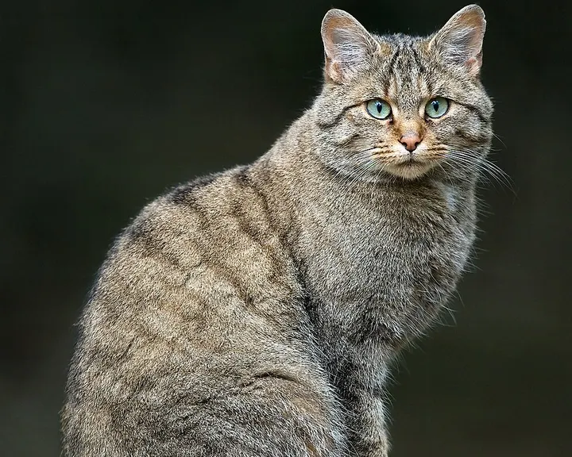
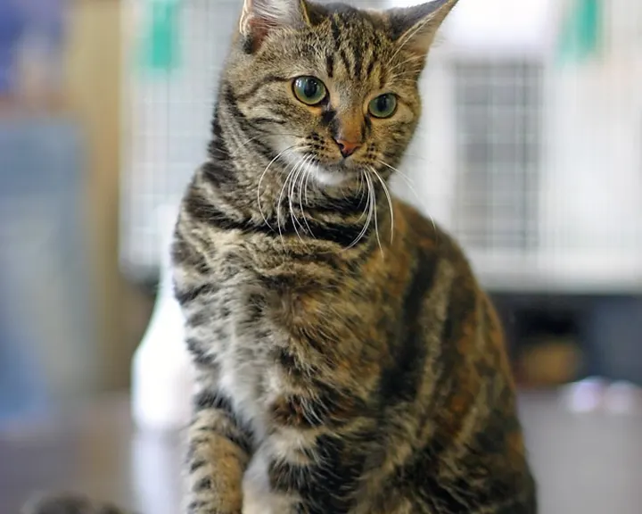
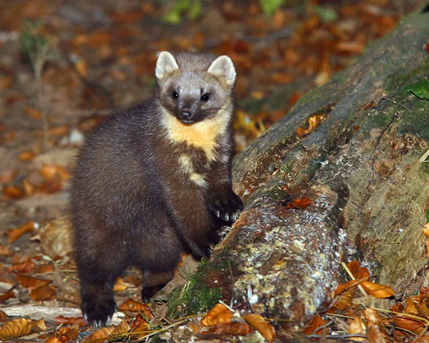
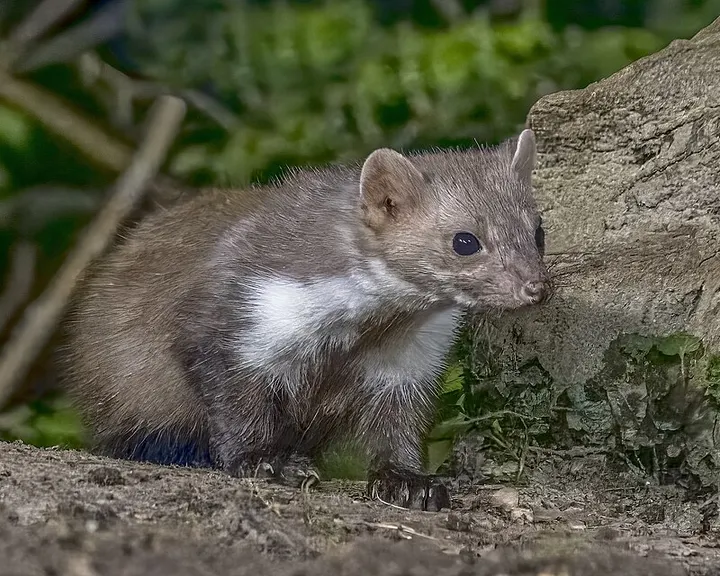

Hermelin oder Mauswiesel?
Das Hermelin hat immer eine schwarze Schwanzspitze, das kleinere Mauswiesel nie.


Die Unterschiede
| Hermelin | Mauswiesel | |
|---|---|---|
| Schwanzspitze | schwarz | braun wie der Rücken |
| Größe | 22–31 cm | 11–26 cm, unser kleinstes Raubtier |
| Winterfell | oft ganz weiß | bei uns meist braun |
| Schwanzlänge | etwa ein Drittel der Körperlänge | kurz, oft nur ein Stummel |
Merkhilfe: Auf die Schwanzspitze achten, selbst im Winterfell bleibt sie beim Hermelin schwarz.
Weitere Doppelgänger
-

WildkatzeFoto: Lviatour (Quelle, öffnet in neuem Fenster), CC BY-SA 3.0 (Lizenztext, öffnet in neuem Fenster) 
HauskatzeFoto: Heikki Siltala (Quelle, öffnet in neuem Fenster), CC BY 3.0 (Lizenztext, öffnet in neuem Fenster) Wildkatze oder Hauskatze?
Die Wildkatze wirkt verwaschen gezeichnet und hat einen dicken Schwanz mit stumpfem, schwarzem Ende.
-

BaummarderFoto: Dani Kropivnik (Quelle, öffnet in neuem Fenster), CC BY-SA 3.0 (Lizenztext, öffnet in neuem Fenster) 
SteinmarderFoto: Charles J. Sharp (Quelle, öffnet in neuem Fenster), CC BY-SA 4.0 (Lizenztext, öffnet in neuem Fenster) Baummarder oder Steinmarder?
Entscheidend ist der Kehlfleck: gelblich und abgerundet beim Baummarder, weiß und gegabelt beim Steinmarder.
-

LuchsFoto: Martin Mecnarowski (Quelle, öffnet in neuem Fenster), CC BY-SA 3.0 (Lizenztext, öffnet in neuem Fenster) WildkatzeFoto: Lviatour (Quelle, öffnet in neuem Fenster), CC BY-SA 3.0 (Lizenztext, öffnet in neuem Fenster) Luchs oder Wildkatze?
Der Luchs ist fast doppelt so groß, hat Pinselohren und einen kurzen Stummelschwanz.